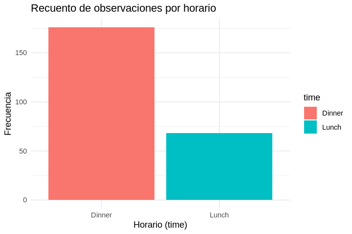
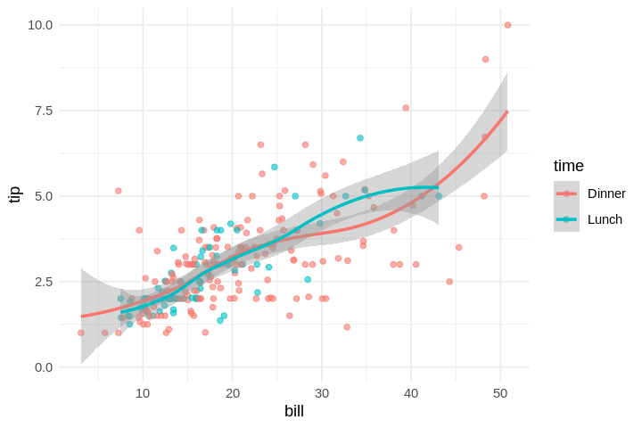
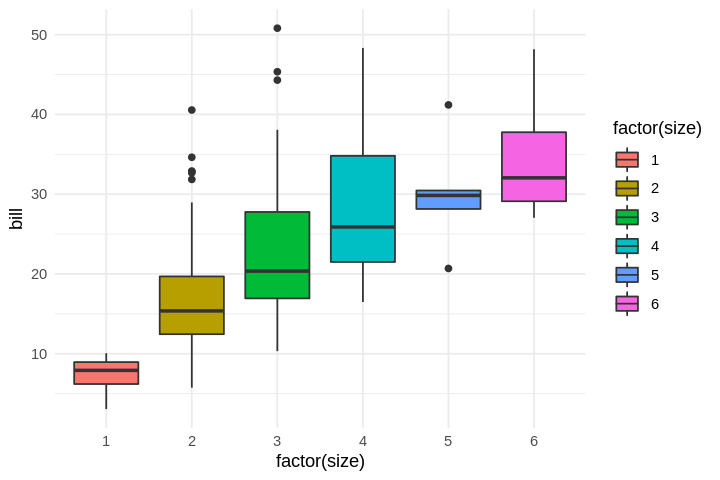
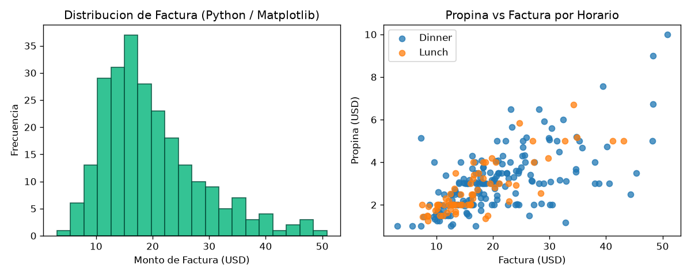

7 Exploratory Data Analysis and Visualization
This chapter focuses on the third phase of the OSEMN framework: exploratory data analysis and visualization (Explore). Before fitting predictive models or performing formal hypothesis testing, we must inspect the distribution of our variables, identify anomalous observations, compute descriptive statistics, and visualize multidimensional relationships. As John W. Tukey emphasized in his classic Exploratory Data Analysis (1977), exploratory data analysis (EDA) allows us to discover unexpected patterns, detect outliers, verify assumptions, and formulate informed hypotheses.
In Nushell, exploratory data analysis combines native functional
pipelines (describe, math,
polars summary) with polyglot scripts in R
(ggplot2) and Python (seaborn,
matplotlib). Graphics rendered by these scripts can be
previewed directly inside the terminal using
timg without leaving the shell.
We begin by navigating into the chapter directory
/data/ch07:
cd /data/ch07From this point forward, all commands in this chapter execute within
/data/ch07. Let us inspect the available files:
ls7.1 Inspecting Data and Its Properties
When approaching a new dataset, our initial questions are fundamental: Does it include a header row? How many observations and features are present? What data types are inferred for each column? Are there duplicate rows or invariant columns?
In this section, we examine vehicles.csv in
/data/ch07:
open --raw venture.csv | lines | first 5Opening the dataset with open vehicles.csv reveals its
row count and schema inventory via columns and
enumerate:
open venture.csv | length
open venture.csv | columns | enumerate | first 15
open venture.csv | columns | enumerate | wrap col_info | flatten | save -f venture_columns.csv7.1.1 Inspecting Data Types and Schema Inference
Nushell automatically infers types upon ingestion (integers, floating-point numbers, booleans, datetimes, and strings):
open datatypes.csv
open datatypes.csv | save -f datatypes_copy.jsonTo inspect exact column types and nullability inferred by Polars,
query polars schema:
open datatypes.csv | polars into-df | polars schema | transpose column dtype
open datatypes.csv | polars into-df | polars schema | transpose column dtype | save -f datatypes_schema.csv7.1.2 Identifying Unique Values and Removing Invariant Columns
Columns containing a single constant value across all observations
provide zero statistical variance for machine learning algorithms. We
detect distinct values per column using get and
uniq:
let df = open venture.csv
let non_const_cols = $df | columns | where {|c| ($df | get $c | uniq | length) > 1 }
$df | select ...$non_const_cols | first 5
$df | select ...$non_const_cols | save -f venture_clean.csvNotice how cleanly Nushell pipelines compose: we isolate invariant
columns with where count == 1, extract their identifiers,
and discard them in a single functional pass via
reject.
7.2 Computing Descriptive Statistics
Summary statistics provide quantitative characterizations of central
tendency, spread, and skewness across numerical distributions. In this
section, we explore /data/ch07/tips.csv:
open tips.csv | first 10
open tips.csv | first 10 | save -f tips_sample.csv7.2.1 Summary Statistics with
math and polars summary in Nushell
Nushell includes a native math command family
(math avg, math min, math max,
math stddev, math median) that operates
directly on numeric columns:
open tips.csv | select bill tip size | math avg
open tips.csv | select bill tip size | math stddev
open tips.csv | select bill tip size | math median | save -f tips_median.jsonTo compute record counts, mean, standard deviation, quartiles, and
range in a single vectorized pass, we invoke
polars summary:
open tips.csv | polars into-df | polars summary | polars collect | polars into-nu
open tips.csv | polars into-df | polars summary | polars collect | polars into-nu | save -f tips_summary.csvFor categorical variables (such as day or
time), pairing uniq -c provides immediate
frequency distributions with in-terminal ASCII counts:
open tips.csv | histogram day
open tips.csv | histogram day | save -f tips_day_freq.csv7.2.2 Transformations and Statistical Summaries via R and Python Scripts
When analytical tasks demand specialized statistical transformations, Nushell invokes external scripts written in R or Python, consuming their structured tabular output directly from standard output:
bat mutate_tips.RExecuting Rscript mutate_tips.R and piping its standard
output into from csv allows sorting, projecting, and saving
the transformed dataset entirely within Nushell:
Rscript mutate_tips.R | from csv | first 10
Rscript mutate_tips.R | from csv | save -f tips_with_percent.csvSimilarly, summary_tips.R groups observations by dining
time and customer sex, computing average party sizes and gratuities:
bat summary_tips.R
Rscript summary_tips.R | from csv | sort-by mean_tip -r
Rscript summary_tips.R | from csv | sort-by mean_tip -r | save -f tips_grouped_summary.csvWith Python (corr_tips.py), we compute a Pearson
correlation matrix and stream it directly back to Nushell:
bat corr_tips.py
python3 corr_tips.py | from csv
python3 corr_tips.py | from csv | save -f tips_correlations.csv7.3 Creating Statistical Visualizations from the Command Line
Visualizations allow analysts to detect nonlinear relationships,
multimodality, and outliers that summary metrics frequently conceal. In
/data/ch07, we generate faceted plots of gratuities across
meal times and days (tips_faceted.png):
bat plot_faceted.R
Rscript plot_faceted.R
ls tips_faceted.png7.3.1 Viewing Images Directly in
the Terminal with timg
To inspect graphical artifacts without leaving the terminal session
or launching a graphical desktop, the dsin container
includes timg (Terminal Image
Viewer).
[!NOTE] Graphical fidelity and native resolution in the terminal: When using a modern terminal emulator supporting bitmap graphics protocols—such as the Kitty Graphics Protocol or Sixel, built natively into emulators like Ghostty, Kitty, or WezTerm—
timgautomatically detects terminal capabilities and displays images in their original pixel-by-pixel resolution, without degrading them to text character blocks. On standard terminals or SSH connections lacking this support,timgfalls back automatically to high-density half-block Unicode characters (-g 80x25), ensuring immediate visual inspection in any terminal environment.
To render an image in /data/ch07, invoke:
timg -g 80x25 tips_faceted.png
Multiple figures can also be arranged and displayed as a composite
terminal gallery using --grid:
Rscript plot_histogram.R
Rscript plot_density.R
timg --grid=2x1 -g 80x25 tips_histogram.png tips_density.png
7.3.2 Remote Alternatives: Copying
Graphics via scp
When working over SSH connections where high-resolution terminal
graphics are unsupported, image files can be transferred to a local
workstation using standard scp (secure copy):
scp usuario@servidor:/data/ch07/tips_faceted.png .7.4 Catalog of Statistical Graphics via R and Python Scripts
This section provides a reference gallery of standard statistical
visualizations authored in R (ggplot2) and Python
(seaborn), ready for CLI execution.
7.4.1 Bar Charts
To visualize discrete distributions across categorical groups,
execute plot_bar.R:
bat plot_bar.R
Rscript plot_bar.R
timg -g 80x25 tips_bar.png
7.4.2 Histograms
To examine the continuous empirical distribution of bill totals,
execute plot_histogram.R:
bat plot_histogram.R
Rscript plot_histogram.R
timg -g 80x25 tips_histogram.png
7.4.3 Density Plots
Kernel density estimation provides a smooth approximation of
probability density functions, demonstrated in
plot_density.R:
bat plot_density.R
Rscript plot_density.R
timg -g 80x25 tips_density.png
7.4.4 Line Charts for Time Series
To examine longitudinal patterns and chronological trends, execute
plot_accident.R:
open Fatalities.csv | first 5
open Fatalities.csv | first 5 | save -f fatalities_head.csv
bat plot_accident.R
Rscript plot_accident.R
timg -g 80x25 fatalities_line.png
7.4.5 Scatter Plots and Trend Curves
To assess bivariate associations between bill size and tip amount,
execute plot_scatter.R and plot_trend.R:
bat plot_scatter.R
Rscript plot_scatter.R
bat plot_trend.R
Rscript plot_trend.R
timg --grid=2x1 -g 80x25 tips_scatter.png tips_trend.png
7.4.6 Box Plots and Violin Plots
Box plots highlight quartiles and potential outliers across groups, while violin plots overlay kernel densities:
bat plot_boxplot.R
Rscript plot_boxplot.R
bat plot_violin.R
Rscript plot_violin.R
timg --grid=2x1 -g 80x25 tips_boxplot.png tips_violin.png
7.4.7 Equivalent Statistical Visualization in Python
Equivalent visualization pipelines can be constructed in Python. The
script plot_iris_py.py computes pair-wise feature
relationships across Iris measurements, outputting summary tables to
Nushell:
bat plot_tips_py.py
python3 plot_tips_py.py | from json
python3 plot_tips_py.py | from json | save -f tips_py_summary.json
timg -g 80x25 tips_python.png
7.5 Summary
Exploratory data analysis in Nushell establishes a unified bridge
between command-line speed and rigorous statistical graphics. Native
commands like math, describe, and
polars summary provide immediate quantitative profiling of
distributions. When advanced graphics are required, polyglot scripts in
R and Python render high-resolution figures that can be previewed
directly in the terminal via timg.